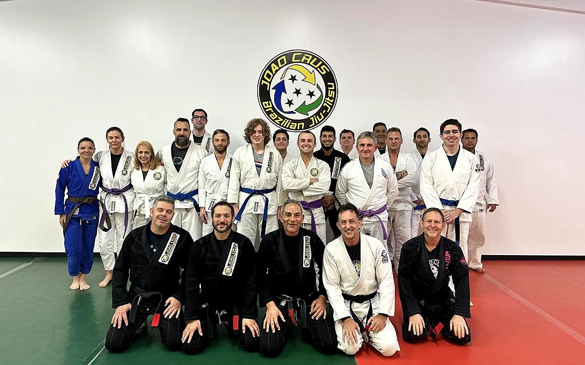
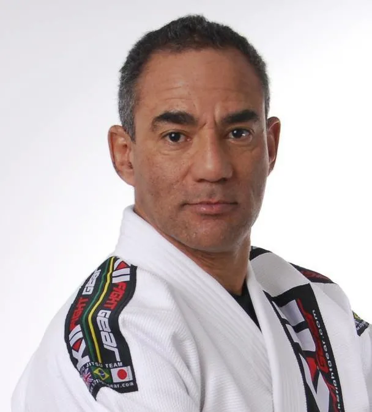

BEGINNERS START HERE.
You don't need to be good at jiu-jitsu to start jiu-jitsu. A coach walks you through the basics, step by step.
Adult jiu-jitsu · Dripping Springs + Austin
Jiu-jitsu puts you in controlled, uncomfortable situations and teaches you how to solve them. Beginners learn through the CALM Method: Control, Awareness, Limits and Movement. No experience needed, and you don't have to get in shape first.
60-second quiz · First class free · No charge

New to jiu-jitsu?
Most adults walk in thinking they need to be tougher, fitter or younger. You don't. You need a safe, coached place to feel pressure, breathe through it and choose your next move. Every class, you practice that a little more.
You don't need to be good at jiu-jitsu to start jiu-jitsu. A coach walks you through the basics, step by step.
Strength, mobility and coordination come from training. You train at your own pace.
Tap means stop. Partners let go right away. Technique comes before intensity.
How Joao teaches
CALM is how Joao Crus BJJ teaches students to handle pressure. You'll hear it in class at both locations.
Stay composed when things get uncomfortable.
Position, posture and breathing, so you respond instead of panic.
Understand what's happening before you act.
Read balance, position, pressure and openings.
Know when to keep going and when to stop.
Train smart, talk to your partner, tap early and respect the tap.
Turn understanding into action.
Practical technique and repetition until your responses feel natural.
Stay composed. Understand the situation. Know your limits. Move with purpose.
Two locations, one way of teaching
Pick whichever fits your week. The quiz asks which location you prefer and sends the matching booking link.
120 Frog Pond Lane, Suite 200
Dripping Springs, TX 78620
Mon + Wed · 6:40–7:40 p.m.
Sat · 11:00 a.m.–12:00 p.m.
1112 N Lamar Blvd
Austin, TX 78703
Tue + Thu · 6:00–7:00 p.m.
DirectionsPrivate lessons are also available by appointment at either location.
Not sure which class fits? Answer a few quick questions about your goals, experience and location.
Find my starting pointYour first class
No pressure to perform. The first class is for learning what jiu-jitsu feels like and whether it fits.
Arrive 10 minutes early in comfortable clothes. We'll have a trial uniform for you.
A coach walks you through the basics. You train at your own pace with a partner.
Tap means stop. Partners let go right away, every time.
You leave knowing a few real techniques and whether jiu-jitsu is a fit for you.

Founded by Joao Crus
Joao Crus has taught Brazilian Jiu-Jitsu since founding his academy in 2003. His Carlson Gracie and Ricardo De La Riva lineages shape an approach built on position, timing, efficiency and control.
The CALM Method grew out of that teaching. For adults, control isn't about dominating anyone. It's staying composed, reading the situation, knowing your limits and moving with purpose.
About 60 seconds
Answer a few practical questions and get a recommended class, plus a link to book it.
Your goals, experience and preferred location.
We text and email you a link to book it.
Nothing is charged. Pick the time that works for you.
Beginner questions
No. Most adults start with none. A coach shows you the basics and you build from there.
No. Fitness comes from training, not before it. You set the pace.
Training is coached and controlled, and Limits is one of the four CALM pillars: tap means stop, and partners let go right away. Tell the coach about any injuries before class.
Whichever fits your schedule. Dripping Springs trains Mon/Wed evenings and Saturday mornings; Austin trains Tue/Thu evenings. Both teach the CALM Method.
No. It recommends a class and sends you a link to book your free first class. No payment is collected.
Your next step
Answer a few quick questions and we'll send you a link to book a class in Dripping Springs or Austin.